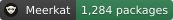

Early warning system of vulnerabilities
Meerkat reads 1,000+ sources around the clock and emails you when a security problem touches the packages and products you run, often hours or days before a CVE exists.
- ▲ L2Two critical PHP flaws reportedfirst alert
- ■ L3Critical PHP security release announcedsame email thread
- ● L4CVE records publishedmost scanners start here
- ✖ L5Actively exploited
21 h 09 min ahead of the CVE
§1
The gap before the CVE
Most tools wait for a CVE record before they say anything. In PHP2Shell, the flaw had been public for almost a day by then.
21 h 09 min
§2
How it works
- 1
Tell it what you run.
Point it at a GitHub repository, send a package list, or pick products by name.
- 2
It keeps watch.
1,000+ sources, around the clock, matched against the packages, versions and products you use.
- 3
You hear first.
One email thread per issue, from first warning to fix to exploitation.
§3
An alert, as it arrives
[UNCONFIRMED][CRITICAL] Two critical flaws reported in PHP
Why you're getting this:
• acme/api: uses PHP (affected version)
• Watched product: PHP
What to do now:
This is an early, unconfirmed report. A fix may not exist yet.
Check where you use it, plan an emergency update window, and
watch this thread: we will update it when the vendor confirms.
Timeline:
• First public signal: 2026-10-20 16:39 UTC (before the CVE was published)
• No CVE published yet
No tracking pixels. The next update arrives as a reply in the same thread, not a new email.
§4
Every alert says how sure we are
| Level | Name | Means | Do |
|---|---|---|---|
| ▲ L2 | Unconfirmed report | Early reports of a serious problem, before any fix or CVE. | Prepare |
| ■ L3 | Release announced | A security release is on its way. | Book a window |
| ● L4 | Advisory published | Fixed versions are out, matched to your projects. | Update |
| ✖ L5 | Actively exploited | Attackers are using it now. | Patch now |
Critical early reports are checked by a person before they go out. You choose the lowest level that emails you instantly.
§5
Private code, in two steps
Your code stays with you. Meerkat receives package names and versions, and never needs access to your repository.
- 1
Create a private project.
Name it in Projects and set the upload key it gives you.
- 2
Run one command.
Run it in your project folder. The scan happens on your machine.
osv-scanner scan source -r --offline --download-offline-databases --all-packages --format cyclonedx-1-5 . \
| jq '{bomFormat,components:[.components[]|select(.purl)|{purl}]}' \
| curl --fail-with-body --silent --show-error --header "Authorization: Bearer $MEERKAT_UPLOAD_KEY" --header "Content-Type: application/json" --data-binary @- https://meerkatsec.win/api/v1/upload
or with syft
SYFT_CHECK_FOR_APP_UPDATE=false syft . -o cyclonedx-json \
| jq '{bomFormat,components:[.components[]|select(.purl)|{purl}]}' \
| curl --fail-with-body --silent --show-error --header "Authorization: Bearer $MEERKAT_UPLOAD_KEY" --header "Content-Type: application/json" --data-binary @- https://meerkatsec.win/api/v1/upload
everything that leaves your machine
{"bomFormat":"CycloneDX","components":[{"purl":"pkg:npm/lodash@4.17.20"},{"purl":"pkg:pypi/django@3.2.0"}]}
To see exactly what would be sent, run the command without its last line. Full guide, including updates on every merge.
§6
What it watches
Packages and platforms
npm · PyPI · Maven · Go · crates.io · RubyGems · Packagist · NuGet · Pub · Hex · Swift · Docker images · GitHub Actions · Debian · Ubuntu · Red Hat · SUSE · Alpine · Amazon Linux
Products, by name
Microsoft · Apple · Google · Cisco · Fortinet · Palo Alto Networks · Ivanti · Citrix · VMware · Oracle · SAP · Atlassian · Siemens · Kubernetes · WordPress · OpenSSL · PHP · nginx · Jenkins · GitLab · and hundreds more
Matching is version-aware: when your lockfile pins a version that isn't affected, you don't get an alert.
§7
A badge for your README

The badge shows how many packages are watched, and links visitors to the same early warnings.
[](https://meerkatsec.win/r/github/OWNER/REPO)
Only add the badge to repositories you maintain.
§8
Questions
Can I sign up today?
Yes. The first 1,000 sign-ups get in straight away. After that, Meerkat opens in weekly waves from a waitlist.
Can I invite someone?
Yes. Every member can invite 3 friends, and an invite skips the waitlist.
Do you need access to my code?
No. Public repositories are read through their dependency files. For private code, you send package names and versions.
How is this different from a vulnerability scanner?
Scanners match your packages against published advisories. Meerkat starts earlier, with the first credible warning, and follows the issue through to the fix.
Will early reports be wrong sometimes?
They can be, so every alert carries a level that says how sure we are. Critical early reports are checked by a person before they go out.
§9
Plans
Every alert level, on every plan.
| Individual | Team | Business | |
|---|---|---|---|
| Price | Freeno card needed | $5per month | $50per month |
| Projects | 3 | 15 | 100 |
| Extra watched items | 25 | 150 | 1,000 |
| Users | 1 | 5 | 25 |
| Private projects | 1 | 15 | 100 |
| Daily digest | Yes | Yes | Yes |
| Slack and webhooks | — | Yes | Yes |
| API | — | — | Yes |
| Audit log | — | — | Yes |
| get started | choose team | choose business |